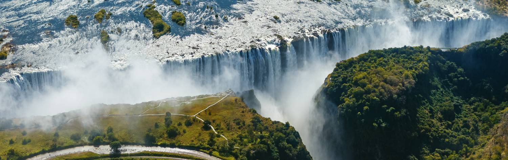
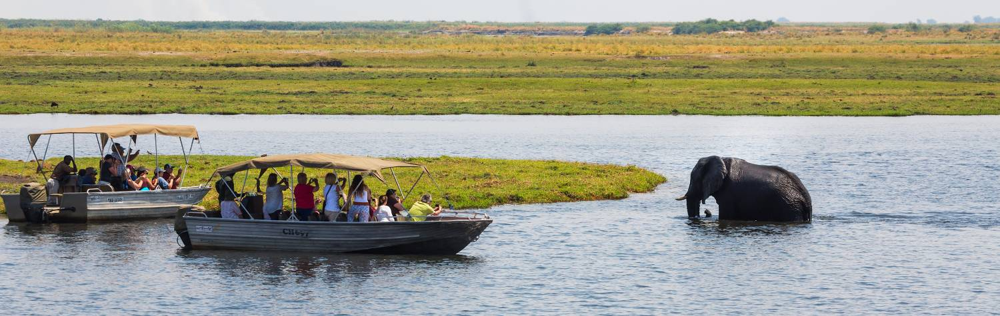

Zambia Safaris
Simulate your senses with a visit to The Smoke That Thunders, otherwise known as
Victoria Falls, one of the Seven Natural Wonders of the World. Although many tourists
flock to its more famous neighbors, Zambia has continued to maintain its off the
beaten path charm. With its abundant diversity of wildlife, untouched natural landscapes,
and welcoming people, experience real Africa.
